Eniwa
Eniwa · Hokkaido
Eniwa
Highlighted on the Hokkaido map.
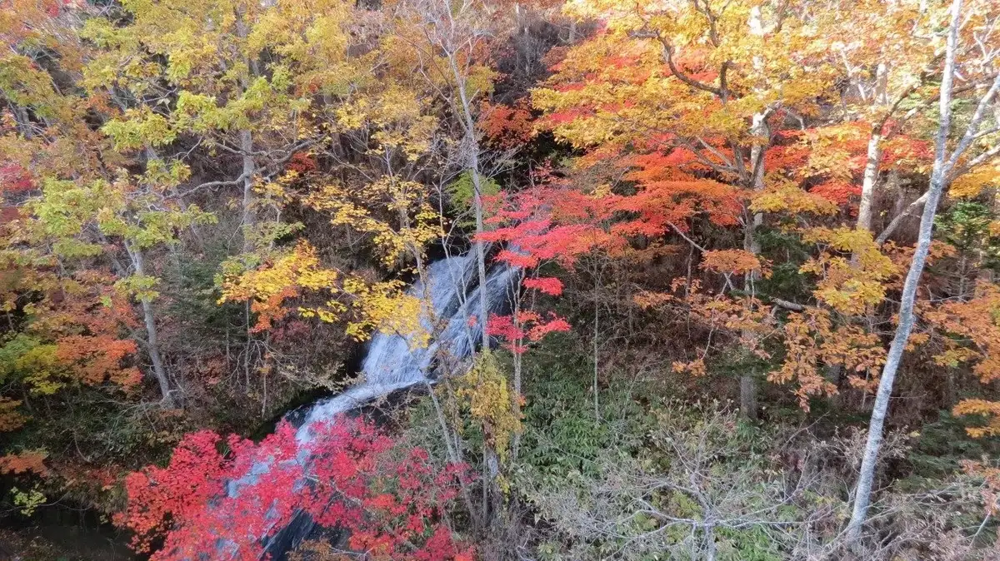
Stay
SAKURA恵庭
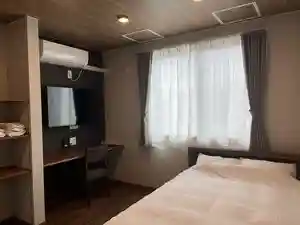
Sakura Eniwa
Piece Eniwa（ピエス恵庭）
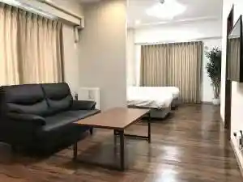
Piece Eniwa ( Piesu Eniwa )
えにわステーションホテル
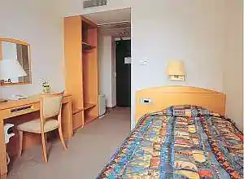
Eniwa Suteeshonhoteru
フェアフィールド・バイ・マリオット・北海道えにわ
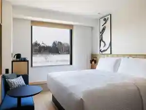
Feafiirudo Bai Mariotto Hokkaidou Eniwa
江花荘
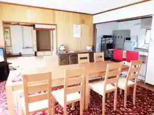
Ebana Sou
Dining
earth CONTEMPORARY
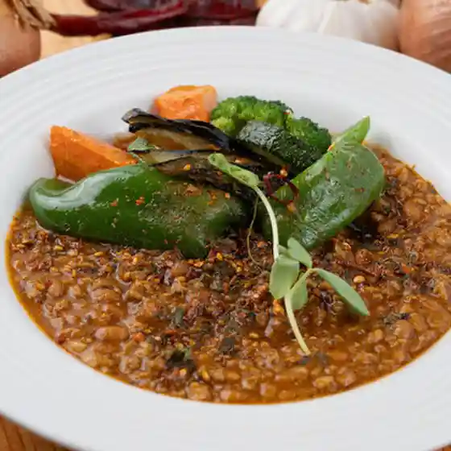
Earth Contemporary
居酒屋 山の猿 恵庭店
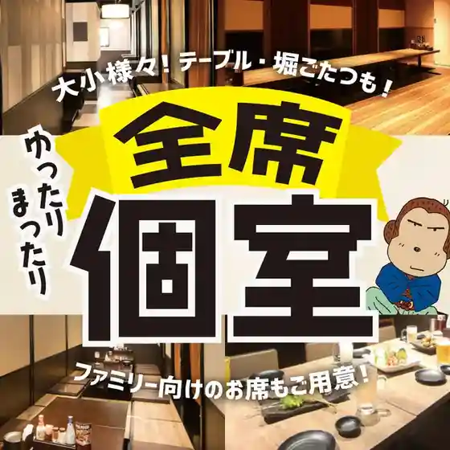
Izakaya Yama No Saru Eniwa Mise
ビラ・リストランテ GAJA 恵庭店
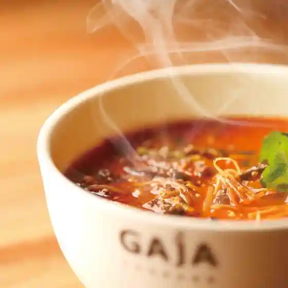
Bira Risutorante Gaja Eniwa Mise
七輪焼肉 安安 恵庭店
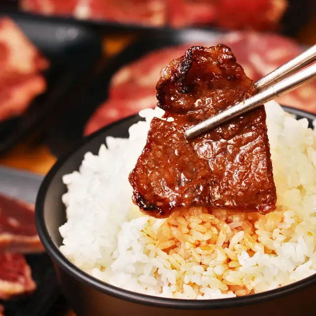
Shichirin Yakiniku An An Eniwa Mise
居酒屋 板ずり
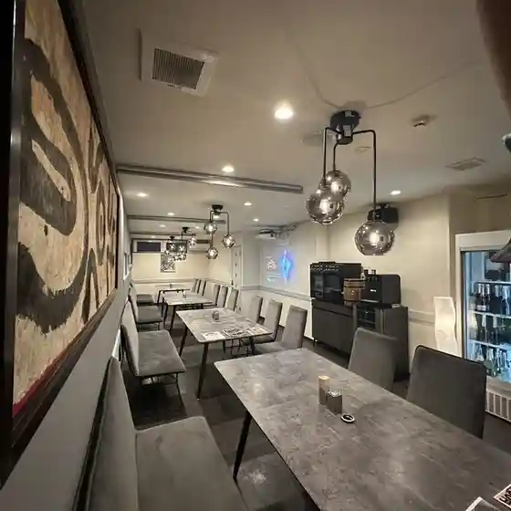
Izakaya Ita Zuri
駅バル JunJun
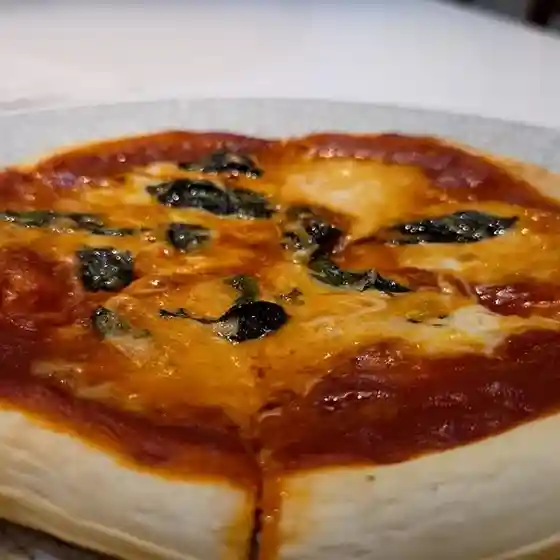
Eki Baru Junjun
庭園レストラン ヴァルハラ 北海道工場店
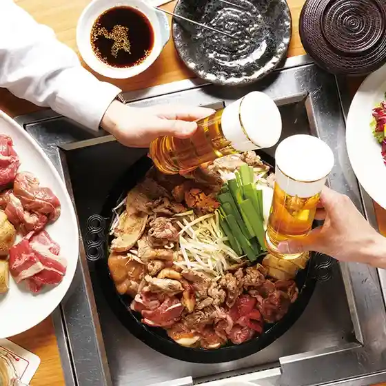
Teien Resutoran Varuhara Hokkaidou Koujou Mise
俺の店 恵庭住吉店
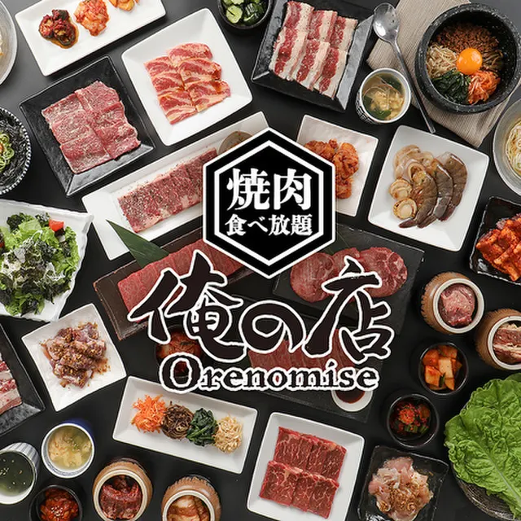
Ore No Mise Eniwa Sumiyoshi Mise
縁び
Heri Bi
スキレットカレーこな雪とんとん
Sukirettokaree Kona Yuki Tonton
こな雪とんとん 恵庭店
Kona Yuki Tonton Eniwa Mise
セイコーマート まきば店
Seikoomaato Makiba Mise
こころベーカリースマイル
Kokoro Beekariisumairu
バー エイト
Baa Eito
セイコーマート 恵庭柏陽店
Seikoomaato Eniwa Kashiwa You Mise
幸寿司
Yukitoshi Tsukasa
金のやきとり 恵庭店
Kin Noyakitori Eniwa Mise
NOMUGELA COFFEE
Nomugela Coffee
マクドナルド ３６号恵庭店
Makudonarudo 3 6 Gou Eniwa Mise
夢創館倶楽部
Yume Sou Kan Kurabu
おそら
Osora
ミシン&カフェ Chill
Mishin & Kafe Chill
道とん堀 恵庭店
Michi Ton Hori Eniwa Mise
Bar NEXT
Bar Next
Sights
Eniwa Gorge
Eniwa Gorge